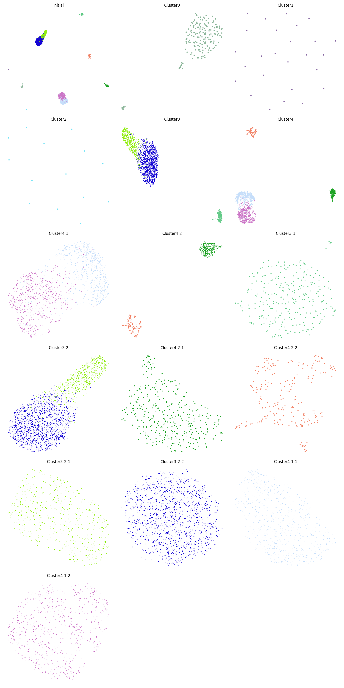
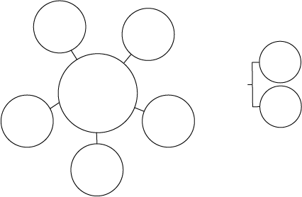
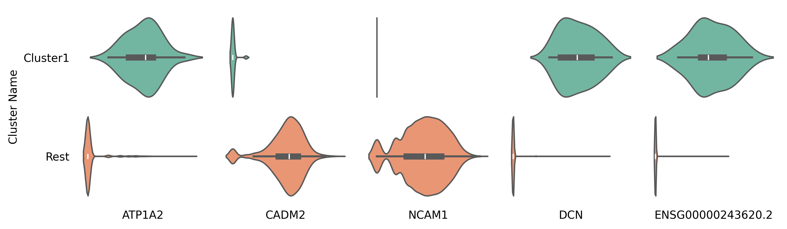
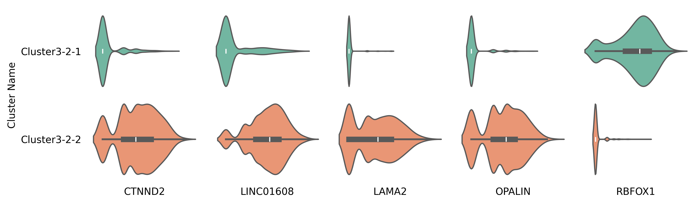

Tree Structure Construction
This dataset contains 4,714 cells from the Red Nucleus region of the human midbrain, as part of the Human Brain Cell Atlas. For more details, refer to the description. It is available for free download in h5ad format from the CELLxGENE website via this link: Download Link.
Hierarchical Clustering of the Data
import requests
import anndata
import CellScope
import numpy as np
from scipy.sparse import issparse
url = "https://datasets.cellxgene.cziscience.com/5488ff72-58ed-4f0d-913c-1b6d4d8412b1.h5ad"
file_path = "Siletti-1.h5ad"
response = requests.get(url, stream=True)
if response.status_code == 200:
with open(file_path, "wb") as f:
for chunk in response.iter_content(chunk_size=8192):
f.write(chunk)
adata = anndata.read_h5ad("Siletti-1.h5ad")
fea_raw = adata.X
cell_types = adata.obs['cell_type']
label = np.array(cell_types)
fea_raw,fea_log,fea = CellScope.cs.Normalization(fea_raw)
fea_Fitting_1, Signal_Space, Center_index = CellScope.cs.Manifold_Fitting_1(fea)
if issparse(fea_Fitting_1):
fea_Fitting_1 = fea_Fitting_1.toarray()
fea_Fitting_2, fitting_index, index_after_outlier_removal = CellScope.cs.Manifold_Fitting_2(fea_Fitting_1)
T_all_1 = CellScope.cs.GraphCluster(fea_Fitting_1)
T_all_2 = CellScope.cs.GraphCluster(fea_Fitting_2)
Y_1 = CellScope.cs.Visualization(fea_Fitting_1)
Y_2 = CellScope.cs.Visualization(fea_Fitting_2)
Tree Structure Visualization
Y_initial, label_step0, Y_1, Title_1, Y_all, Title_all, index_1, index_all, step0, step1 = CellScope.ts.generate_tree_structured(fea_Fitting_1, T_all_1, step0 = None, step1 = 8)
CellScope.ts.visualize_tree_structured(Y_initial, label_step0, Y_1, Title_1, Y_all, Title_all, index_1, index_all, step0, step1, T_all_1, save_fig = True, save_path='Res')
The current version of CellScope’s code for drawing tree structures can generate a visualization for each node. The naming convention is as follows: Initial represents the visualization of all cells; Cluster 0 to Cluster 5 represent the visualization of the first-layer nodes; Cluster 51 and Cluster 52 correspond to the first and second subclusters of Cluster 5, respectively, for the second-layer nodes, and so forth.
Through this set of image outputs, CellScope provides users with a template for self-assembly using Adobe Illustrator software, as shown in the figure below.
The current version of CellScope can automatically generate hierarchical tree diagrams with up to three levels.
CellScope.ts.tree_structure_visualization_static(T_all_1,step0,step1,Title_1,Title_all,Y_initial,Y_1,Y_all,index_1,index_all, save_figure=True, filename="Res/tree_visualization_static.pdf")
To better observe cell differentiation processes and pathways, CellScope provides dynamic visualization of hierarchical tree structures.
CellScope.ts.tree_structure_visualization_dynamic(T_all_1,step0,step1,Title_1,Title_all,Y_initial,Y_1,Y_all,index_1,index_all,save_gif=True,
gif_filename="tree_animation.gif", dpi=100)
If you are more interested in the differentiation at a specific step or deeper differentiation pathways, we recommend using tree_structure_visualization_step to progressively generate the branches of the tree-structured visualization.
_,_ = CellScope.ts.tree_structure_visualization_step(T_all_1,step0,step1,Title_1,Title_all,Y_initial,Y_1,Y_all,index_1,index_all,main_radius=2.0,orbit_radius=1.5,
orbit_distance=4.0,branch_params=None,save_fig = False,save_path = '')
Marker Gene Between Each clusters
n = Y_initial.shape[0]
Gene_Name = adata.var['feature_name']
Gene_Name = np.array(Gene_Name)
for ii in range(len(Title_1)):
cluster1 = index_1[ii]
cluster2 = np.setdiff1d(range(n),cluster1)
marker_gene_indices,_ = CellScope.fm.FindMarker(fea_log, cluster1, cluster2, selected_number = 5, selected_method = 'diff pct')
marker_gene_name = Gene_Name[marker_gene_indices]
CellScope.gev.compare_violin_plot_between_classes(fea_log, marker_gene_indices, marker_gene_name,
cluster1, cluster2, class_name=[Title_1[ii], 'Rest'],
figsize=(10, 3), save_fig=False, save_path=None)
for ii in range(int(len(index_all)/2)):
cluster1 = index_all[2*ii]
cluster2 = index_all[2*ii+1]
marker_gene_indices,_ = CellScope.fm.FindMarker(fea_log, cluster1, cluster2, selected_number = 5, selected_method = 'diff pct')
marker_gene_name = Gene_Name[marker_gene_indices]
CellScope.gev.compare_violin_plot_between_classes(fea_log, marker_gene_indices, marker_gene_name,
cluster1, cluster2, class_name=[Title_all[2*ii], Title_all[2*ii+1]],
figsize=(10, 3), save_fig=False, save_path=None)
Using the violin plots of the marker genes in Cluster 1 versus other cells, as well as between Cluster 3-2-1 and Cluster 3-2-2 as examples.
 